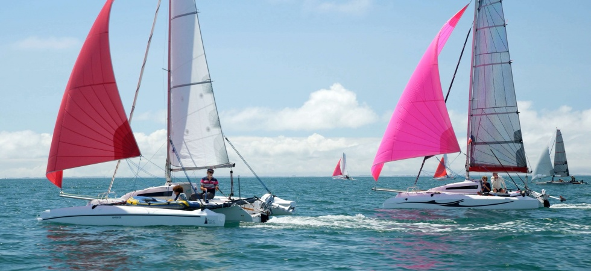
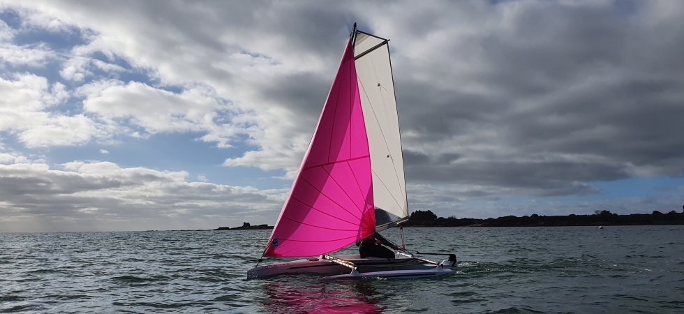
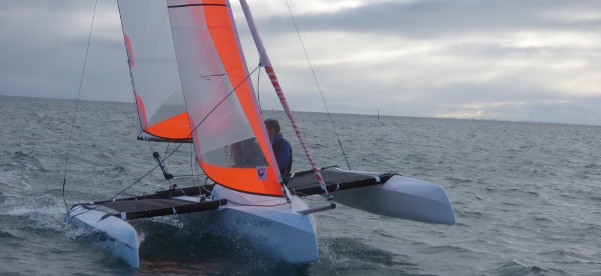
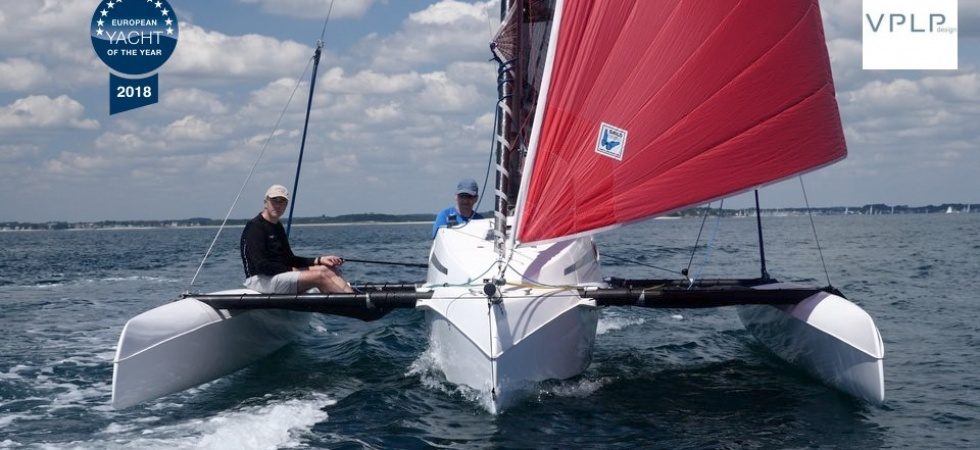
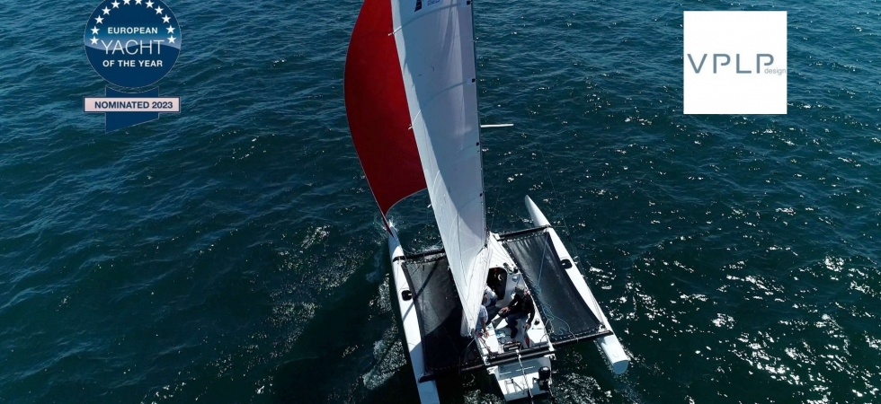
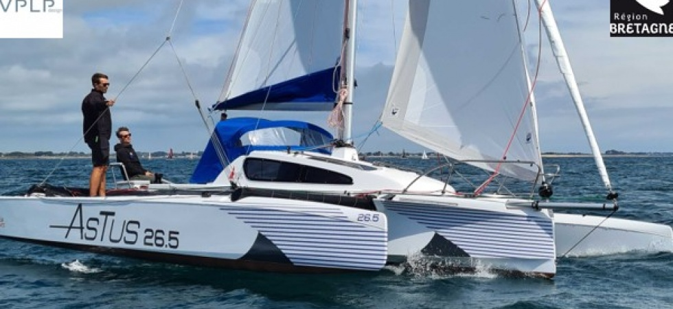

Light. Fast. Exhilarating.
Low weight, efficient hulls and responsive multihull performance turn a fresh breeze into genuine excitement. Add the freedom of a trailer, and a new coastline can become your next sailing ground.
ASTUSTrailerable trimarans
Every Astus combines trailerable freedom with the defining qualities of a trimaran: light, fast and exhilarating for the adventurous sailor; exceptionally stable, with limited heeling, for relaxed time on the water with family and friends.

Two ways to love the water
Low weight, efficient hulls and responsive multihull performance turn a fresh breeze into genuine excitement. Add the freedom of a trailer, and a new coastline can become your next sailing ground.
Exceptional stability and limited heeling create a calm, confidence-inspiring platform—equally suited to sharing an afternoon with a grandchild, a partner or a friend.
Choose your Astus
Each model has its own personality. Start with how you want to use your boat—spontaneous afternoons, family adventures, energetic performance or independent coastal cruising.

Simple, light and wonderfully spontaneous. Sail, row, fish or explore in prao or trimaran configuration.

Light, responsive and exhilarating—a trailerable performance boat for sailors who love the energy of a beach cat.

Sport sailing, relaxed family outings or coastal camping—with two berths and genuine trailerable freedom.

A comfortable coastal cruiser with four berths, meaningful living space and performance when you want it.

Five berths, standing headroom and serious sailing capability in an innovative transportable flagship.
A boat for your kind of freedom
Easy setup, responsive sailing and room to enjoy the water without complication.
Consider the 14.5 or 16.5A real cabin, a broad sailing platform and the freedom to tow toward a new coastline.
Discover the 20.5More accommodation and range for families and sailors who want to stay out longer.
Explore the 22.5 or 26.5Personal U.S. guidance
Tell Suntrail how, where and with whom you imagine sailing. We will help you begin with the right model.
Start a conversation →